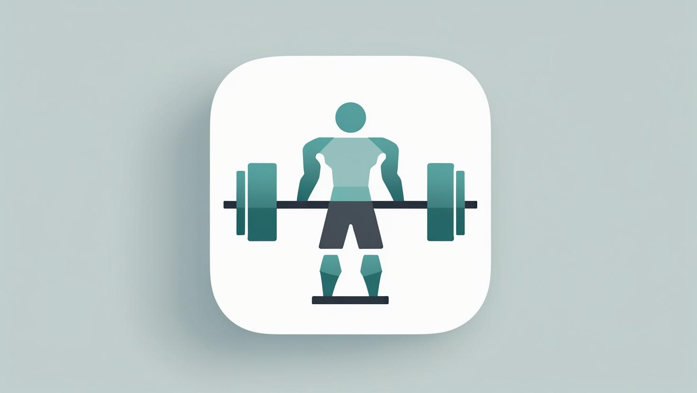

Gym App

"A disciplina constrói o corpo e a mente, também lapida a alma"
O site tem como objetivo auxiliar pessoas a monitorar seus treinos, alimentação e progresso físico, proporcionando uma experiência prática e eficiente para melhorar o desempenho na academia. Em um único lugar, o usuário pode controlar sua dieta, estabelecer metas de peso e acompanhar medidas corporais, promovendo saúde, disciplina e evolução diária.
Após realizar o login, é possível iniciar treinos, registrar informações, buscar registros anteriores e deslogar da conta de forma simples. A plataforma oferece controle centralizado da rotina de treinos e alimentação, permitindo um acompanhamento visual e organizado do progresso, com fácil acesso e uso, tornando a experiência completa e motivadora.